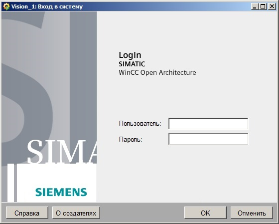
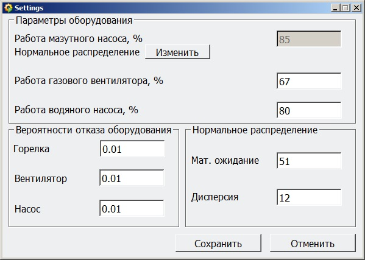
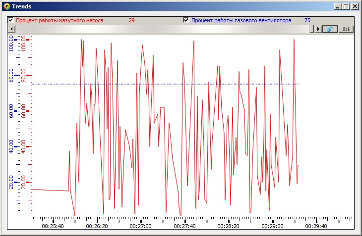
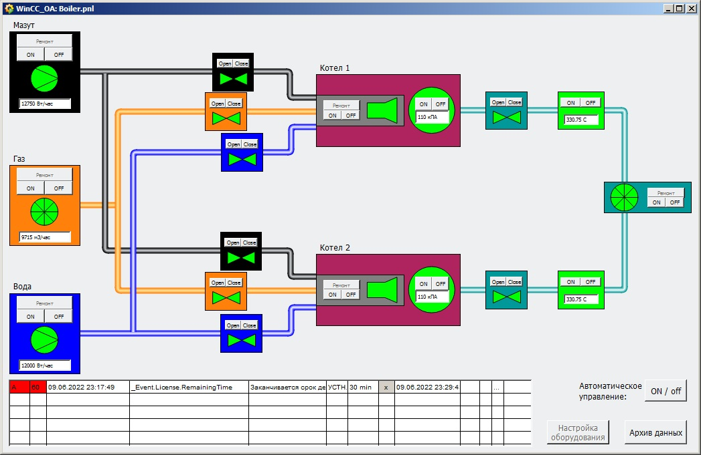

Моделирование котельной
Введение
Авторизация в системе
Режим администратора
Режим оператора
Завершение работы
Моделирование котельной
Введение
Система предназначена для моделирования работы котельной. В системе предусмотрено две роли пользователей: администратор и оператор. Перед началом работы с системой пользователи должны авторизоваться.
Авторизация в системе
На рисунке ниже приведено окно авторизации в системе, которое отображается при запуске системы.

В центральной части окна расположены поля для ввода логина и пароля. В нижней части окна расположены кнопки "ОК" и "Отменить", а так же "Справка" и "О создателях".
При нажатии кнопки «Отменить» окно авторизации закрывается. При нажатии кнопки "ОК", если логин и пароль введены верно, откроется новое окно для работы с системой.
Кнопка "О создателях" открывает окно с информацией о разработчиках, а кнопка "Справка" - данное руководство.
Наверх
Режим администратора
После авторизации администратору открывается панель, в которой происходит моделирование работы котельной.
Панель котельной
На данной панели отображаются все модули котельной и кнопки для их управдения. Кнопки "ON/OFF" рядом с модулями отвечают за включение и выключение соответствующего им модуля, "Open/Close" - за открытие/закрытие задвижки.
Кнопка "Ремонт" отправляет неисправный модуль на починку. Работоспособность и состояние модулей отображается визуально цветами:
- Зеленый - исправен, включен/открыт;
- Желтый - исправен, выключен/закрыт;
- Красный - неисправен;
- Синий - неисправен, находится в ремонте.
В самом низу находится таблица, уведомляющая пользователя об аварийных ситуациях. Также правее есть кнопка "On/Off", позволяющая включить автоматический режим управления котельной.
Кнопка "Настройка оборудования" открывает панель, позволяющую администратору настраивать параметры оборудования. Кнопка "Архив данных" открывает панель с трендами расхода основного и альтернативного топлива.
Настройка оборудования

На данной панели слева внизу администратор может задать вероятности отказа модулей. Правее он может указать математическое ожидание и дисперсию для нормального распределения.
В верхней части администратор может задать мощности работы насосов и вентилятора. Кнопка "Изменить" переключает значение подачи топлива между фиксированным значением и нормальным распределением.
Кнопка "Сохранить" закрывает окно и сохраняет указанные администратором значения, кнопка "Отменить" - закрывает окно без сохранения изменений.
Архив данных

На данной панели отображаются тренды мощностей работы мазутного насоса и газового вентилятора, которые отвечают за подачу топлива. Администратор может изменять масштаб трендов для более детального анализа.
Для выхода с панели требуется нажать крестик в правом верхнем углу.
Наверх
Режим оператора
После авторизации оператору открывается панель, в которой происходит моделирование работы котельной.
Панель котельной

На данной панели отображаются все модули котельной и кнопки для их управдения. Кнопки "ON/OFF" рядом с модулями отвечают за включение и выключение соответствующего им модуля, "Open/Close" - за открытие/закрытие задвижки.
Кнопка "Ремонт" отправляет неисправный модуль на починку. Работоспособность и состояние модулей отображается визуально цветами:
- Зеленый - исправен, включен/открыт;
- Желтый - исправен, выключен/закрыт;
- Красный - неисправен;
- Синий - неисправен, находится в ремонте.
В самом низу находится таблица, уведомляющая пользователя об аварийных ситуациях. Также правее есть кнопка "On/Off", позволяющая включить автоматический режим управления котельной.
Кнопка "Настройка оборудования" для оператора недоступна. Кнопка "Архив данных" открывает панель с трендами расхода основного и альтернативного топлива.
Архив данных
На данной панели отображаются тренды мощностей работы мазутного насоса и газового вентилятора, которые отвечают за подачу топлива. Оператора может изменять масштаб трендов для более детального анализа.
Для выхода с панели требуется нажать крестик в правом верхнем углу.
Наверх
Завершение работы
Для завершения работы программы требуется нажать крестик в правом верхнем углу на главной панели (панели котельной).
Наверх